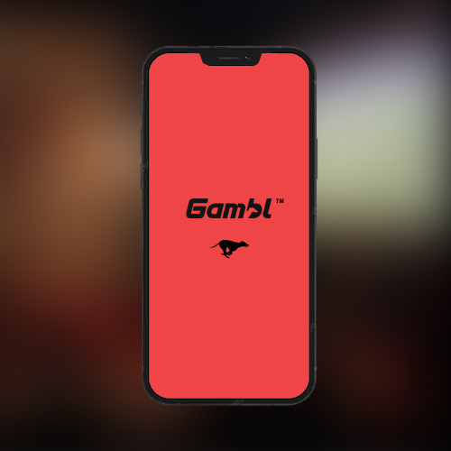
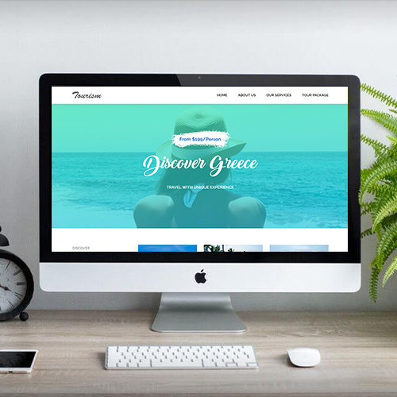
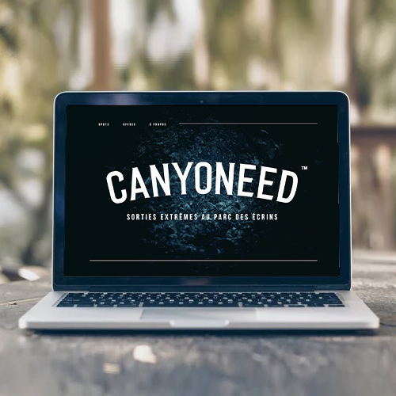
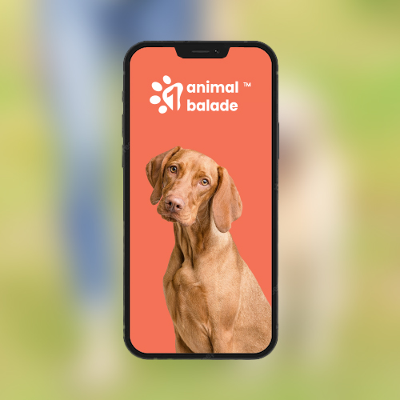
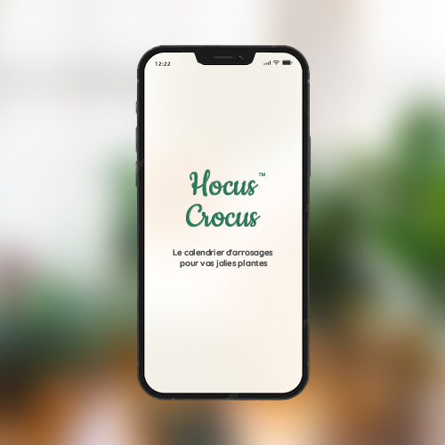
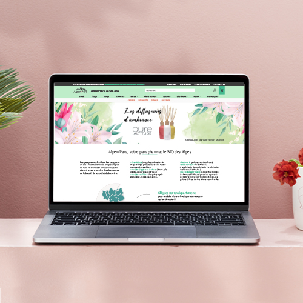
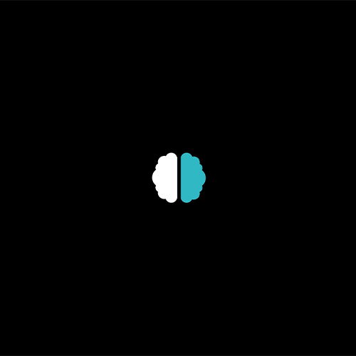

Salut, moi c'est Julie Chaillard
Graphiste webdesigner de 21 ans.
Bienvenue sur mon portfolio.
Découvrez-moi en scrollant !
De par ma formation précédente en design graphique print, j'ai aujourd'hui un profil polyvalent. Je vous propose de découvrir ces compétences via mes réalisations.
Un éventail de compétences à votre disposition
-

.gif)
INTERFACE DE VISIONNAGE ET DE PARIS SPORTIFS
UI
UX
Identité
Tests
Mobile
TV
Projet d'école consistant à concevoir et positionner notre marque par rapport à ses concurrents, étudier et définir les typologies d'usagers, fixer les objectifs UX puis animer des tests utilisateurs... Cette interface est déclinée en format TV pour permettre aux "usagers télé" de parier en toute simplicité.
-

.gif)
SITE WEB DE RESERVATION DE VOYAGES
Intégration
Desktop
Pixel perfect
Projet d'école nous entraînant à intégrer une maquette déjà établie, en local, en utilisant les langages HTML/CSS. Un excellent exercice pour moi qui débutait en intégration à ce moment-là.
-

.gif)
SITE WEB DE RESERVATION DE SORTIES CANYONNING
UI
UX
Identité
Desktop
Projet d'école consistant à créer une interface de présentation et réservation de sorties extrêmes de canyonning. Etude de l'UI/UX, originalité et simplicité étaient mes objectifs, c'est pourquoi j'ai proposé une animation plongeante au chargement du site web.
-

.gif)
APPLICATION DE DOG-SITTING BENEVOLE
UI
UX
Identité
Tests
Mobile
La création de cette application m'a ouvert les yeux sur le sentiment de sécurité quant aux interfaces qui publient des informations à risque (ex: nounous, pet-sitters). Grâce aux tests utilisateurs j'ai pu aisément ajuster mon application jusqu'à ce que les utilisateurs se sentent en totale confiance.
-

.gif)
APPLICATION DE CALENDRIER D'ARROSAGES DE PLANTES
UI
UX
Mobile
Projet personnel qui me tenait à coeur de réaliser, puisque j'ai des plantes à prendre soin chez moi. Elle permet de programmer des alertes d'arrosage et d'informer sur les préférences environnementales de la plante. Mon objectif était de la rendre parfaitement fonctionnelle avec le moins d'écrans possibles.
-

.gif)
SITE E-COMMERCE DE PARAPHARMACIE LOCALE
UI
UX
Desktop
E-commerce
Projet réel de refonte UI et UX d'un site de vente en ligne de produits parapharmaceutiques. J'ai beaucoup aimé designer ce site. J'ai beaucoup fait de veille afin d'étudier l'UI/UX des concurrents et des sites de e-commerce et ai travaillé le référencement naturel.
-

.gif)
MOTION DESIGN : my digital contest 2022
Motion Design
Montage Vidéo
Ma participation au concours national de Motion Design "My Digital Contest" de l'école My Digital School. Élaboration d'un storyboard, import d'un rythme, c'est parti. Cliquez sur l'image pour ouvrir la page YouTube.
"Il faut oser ou se résigner à tout." -Titus Livius
Je suis...
Passionnée, curieuse, ma tête déborde d'imagination ! J'aime me servir des nouvelles technologies pour mes projets, et parfois même j'en créée de nouvelles (dans ma tête).
De nature enjouée, j'aime communiquer ma bonne humeur, je suis très impliquée dans les projets que l’on me confie et j’apprécie tisser des relations cordiales avec mes collègues.
J'aime sortir des sentiers battus. Mon goût pour le challenge est ce qui m'a amenée ici aujourd'hui.